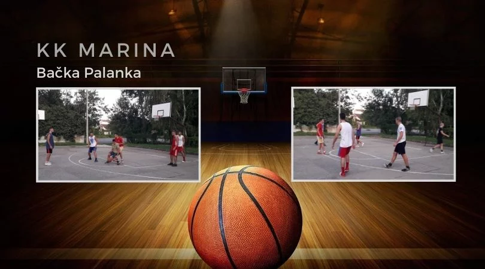
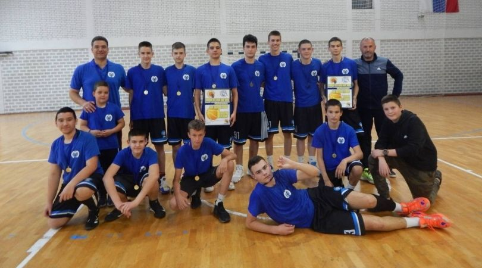
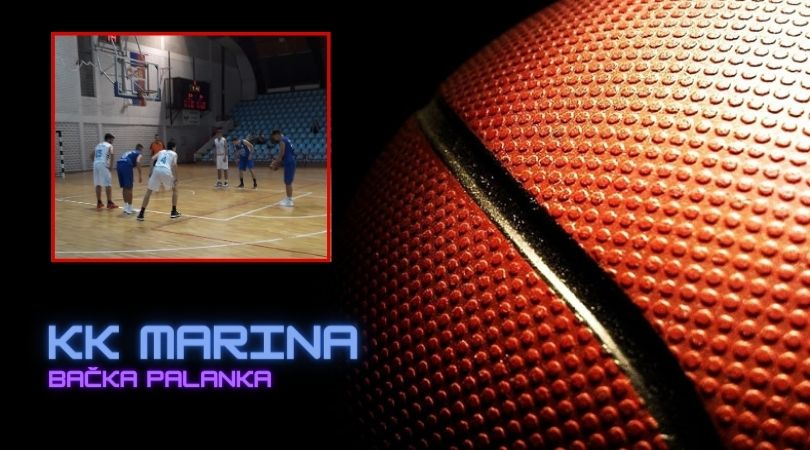
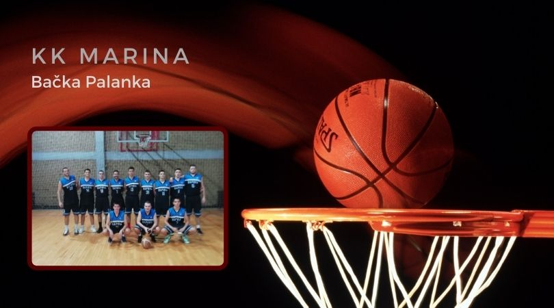

BAČKA PALANKA: Pripreme za nastupajuću sezonu započeli su i mladi košarkaši bačkopalanačke Marine.

Prvi deo priprema odvija se na otvorenim terenima nakon čega se očekuje ulazak u salu, gde će se trenirati uz poštovanje propisanih mera za suzbijanje epidemije korona virusa.
Oni će se ove godine takmičiti u Drugoj Vojvođanskoj košarkaškoj ligi, pa će ljubitelji košarke u našem gradu posle dužeg vremena imati priliku da gledaju nastupe muške seniorske ekipe.
KK "Marina" počela sa pripremama
Košarkaši će se ove godine takmičiti u Drugoj Vojvođanskoj košarkaškoj ligi.

Okosnicu tima činiće mladi igrači koji su ponikli u ovdašnjim školama košarke, KK „Marini“ i KK „Feniksu“, što ekipi daje na homogenosti i celovitosti kao preduslovu za stvaranje dobre atmosfere i budući napredak, poručuju iz kluba.
Trener Đurica Đukić, pred nastupajuću sezonu računa na sledeće igrače: Suđić D., Dević, Šijakov, Kecman, Milovac, Đukić, Knezević, Kiso, Novaković, Cicković, Porobić, Kosijer, Vučić, Suđić U. i Mrđan.
Produžeci u Sivcu
KK Marina je u Sivcu nastupila u sledećem sastavu: Dević 12, Knežević 2, Čičković, Đukić 16, Porobić 8, Kosjer 5, Milovac 14, Suđić 11 i Kiso 7. Trener Đukić Đurica.

Marina je u prvom kolu imala teško gostovanje u Sivcu gde se igralo protiv znatno iskusnije ekipe. Domaća ekipa, tokom celog meča igrala je agresivno ne dozvoljavajući gostima da dominiraju pod košem što je bila njihova odlika u pripremnim utakmicama. U takvoj igri igrači Marine su se više oslanjali na šut spolja, koji nije najbolje funkcionisao u prvom delu meča, pa se na odmor otišlo sa rezultatom 43:34 u korist domaćina.
Pet sekundi pre kraja utakmice pri rezultatu 83:83, nakon lopte koju je Marina oduzela protivniku i prodora koji je usledio sudije nisu „svirale“ očigledan faul, pa je utakmica otišla u produžetke.
U produžecima Marina je igrala bez tri igrača koji su ranije isključeni zbog pet ličnih grešaka tako da je konačan rezultat iznosio 84:77 za domaćina.
Nova pobeda Marine. Slavili protiv Slavije
Kolo pre kraja Letnje lige Marina se nalazi na prvom mestu na tabeli

U subotu (19.06.) u Novom Sadu, po drugi put u sezoni savladana je ekipa Slavije, rezultatom 59:60.
Bila je ovo tvrda utakmica odigrana u teškim uslovima pod visokom temperarurom koja je vladala u sali, o čemu govori i nešto manji broj koševa koji su postigli oba tima. Ekipe su bile izuzetno motivisane i željne da postignu pobedu, a već u petoj minuti trener ekipe iz Novog Sada isključen je nakon žustre reakcije na jednu spornu sudijsku odluku, te je vođenje daljeg toka utakmice preuzeo njihov pomoćni trener. U samoj završnici, ekipa Marine je bila pribrana i zabeležila je nove bodove, čime je zadržala prvo mesto na tabeli. U narednom, poslednjem kolu lige, bačkopalanački košarkaši dočekuju ekipu Futoga.